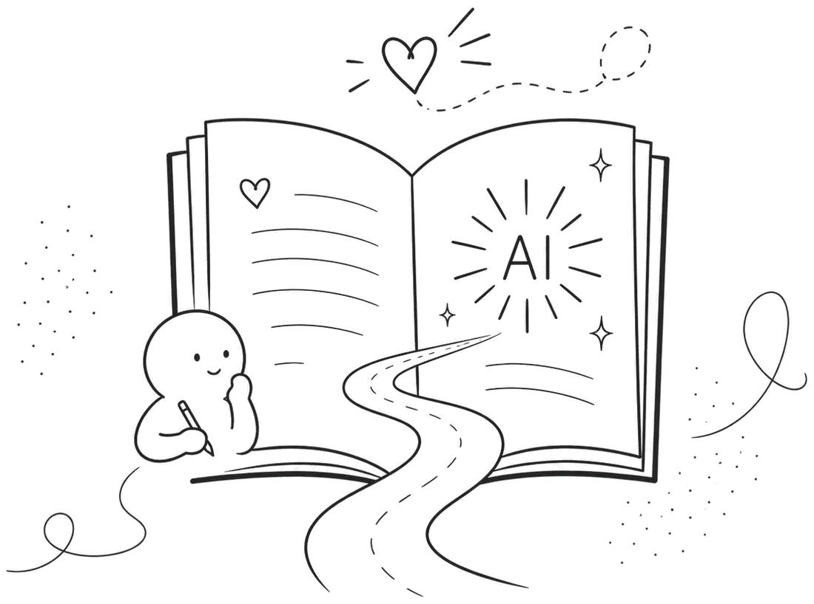
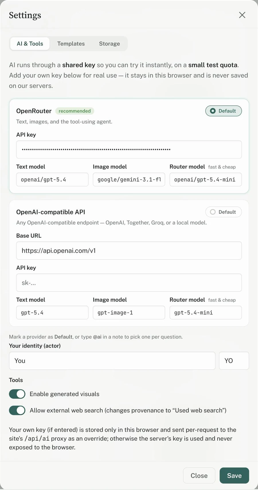
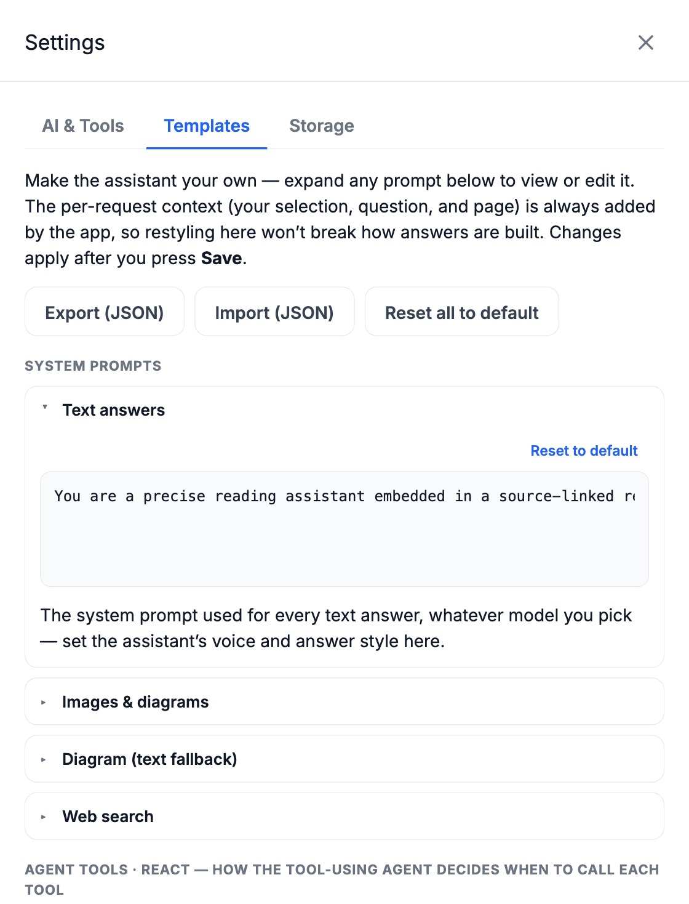
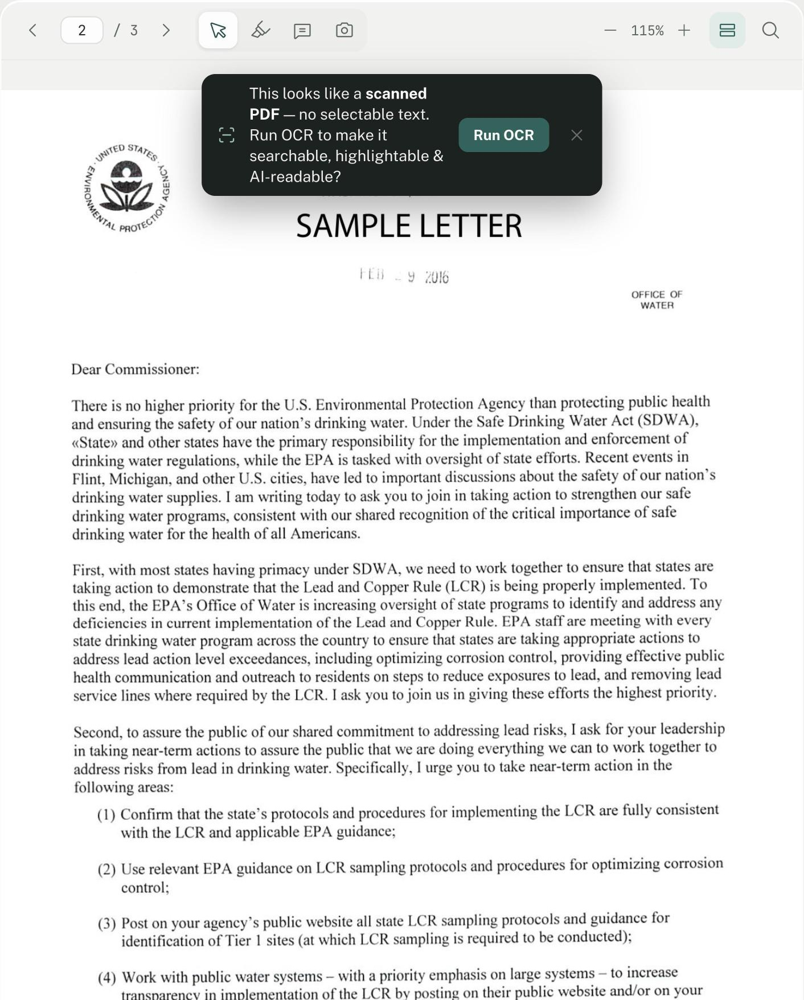

Active Learning
with AI
Not another chat‑with‑your‑PDF. Every note and answer stays pinned to the source, on your machine, and entirely yours.
Pinned to the source — answers anchor to the exact spot on the page.
Private by default — your PDF never leaves your browser.
Yours to control — your model, your prompts, self‑hostable.

The public app runs on a shared key with a small quota so you can try it instantly. For real use, add your own key in Settings — it stays in your browser and is never saved on our servers.
Every note ties back to the exact spot it came from — a connector links each card to its highlighted passage or captured figure. Try it live →
Source-linked. Private. Yours.
Pinned to the source
Every highlight, screenshot, and AI answer anchors to the exact page coordinate — trace any claim back with one click.
Nothing leaves your machine
Your PDF opens locally in the browser. No upload, no backend database, no account — we can never see it.
Bring your own model
Point it at OpenRouter or any OpenAI-compatible endpoint. Your key stays in your browser, sent per request.
See the agent’s work
Every answer is inspectable — expand the trace to read each step, tool call, and source it drew from.
Notes are a file you own
Everything exports to portable JSON (or PDF) that lives right next to your PDF. No lock-in, ever.
Open-source & self-hostable
AGPL-licensed and dependency-light. Read it, fork it, run it yourself — and edit every prompt.
Open Settings.
Control everything.
Choose the model, tune every prompt, and switch tools on or off — all from the browser, nothing hidden.
Open Settings

Tune every prompt.
Every system prompt — even the tool-using agent’s tool descriptions — is editable under Settings → Templates. Restyle the assistant’s voice, then export or import your whole set as JSON.
Open TemplatesEven scans become real text.
Open an image-only PDF and PairedX offers one-tap OCR that runs right in your browser — your file never leaves your machine. It rebuilds a true text layer, so highlights, search, and the AI all work like any other PDF.

The combination is the point.
Any one of these features exists somewhere. Having them together — pinned, private, and yours — doesn’t.
| Capability | PairedX | NotebookLM | ChatPDF | Beaver 1 | Readwise |
|---|---|---|---|---|---|
| Notes pin to an exact spot in the PDF | Yes | No | No | Partial | No |
| Opens your local file — no full-file upload | Yes | No | No | Partial | No |
| Bring your own model / key | Yes | No | No | No | Partial |
| Inspectable agent trace | Yes | No | No | No | No |
| Notes are a portable file you own | Yes | No | No | Partial | Partial |
| Open-source & self-hostable | Yes | No | No | No | No |
| Price | Free | Free | Freemium | Free | ~$120/yr |
Compared with the mainstream tools we’re asked about most, to the best of our knowledge as of July 2026 — corrections welcome. ~ = partial.
1 Beaver is a free Zotero plugin (so it needs Zotero, and pins via Zotero’s own annotations) but routes AI through its own cloud and isn’t self‑hostable.
Readwise lets you bring your own OpenAI key only, and isn’t self‑hostable. Portable‑notes support varies by export.
Active learning
in the age of AI.
Don’t just read — question it, summarize it, and keep what you learn. Every note stays linked to its source.